对了，前段时间我们学校不是整了一个非遗文化进校园的活动吗，我超喜欢那个花鼓灯。那个“大走场”绝活和武王墩的编钟一样上头！青铜编钟深埋地下，地上传着百姓的花鼓调子，这是古往今来的文化DNA的联动。

二十四节气剪纸

寿县城墙
（拿出窗花）你看，这不刚过完年，我把我们家剪的窗花揣兜里带到学校来了。淮南剪纸非遗传承人周琴老师用一张红纸一把剪刀剪出二十四节气，作品被中国农业博物馆收藏。我刚开始剪的“福”字像被狗啃过，但老师说“剪破了才是生活艺术”——突然觉得武王墩那些破损的漆器也有灵魂了！
安徽还真是“考古+非遗”双buff？这很有文化了！
必须的！楚文化博物馆里还有寿县古城墙防洪系统——古人用糯米灰浆砌墙，洪水来了自动堵门，比我们的防水手机壳还智能。
那当然。说到非遗，今年春节期间，安徽各地围绕“文旅惠民促消费，欢欢喜喜过大年”的主题，聚焦“非遗贺新春”，开展丰富多彩的系列宣传展示活动计502场次，线上线下累计参与2300余万人次，实现销售收入近7亿元。全省精彩纷呈的春节非遗活动，不仅彰显了春节文化功能，也为全省文旅市场迎来“开门红”。咱们淮南寿县也参与了呢！寿州古城集中展示了踩街大巡游，老剧团新年戏曲专场演出与蛇年戏曲电音狂欢夜充满时尚活力，豆腐宴、大救驾、寿州窑等数十种非遗项目，为游客提供互动体验。
这种好事我怎么不知道！求大数据下次及时推送给我。对了，我上回在网上买的豆腐快到货了，回头给你拿一瓶，可好吃了。
那感情好，我这还有十几个快递在路上，都是非遗好物，有好吃的，也有好玩的，给你一键打包。
Oh my god!我种草了好几种安徽美食，但是害怕买到假货
非遗好物馆
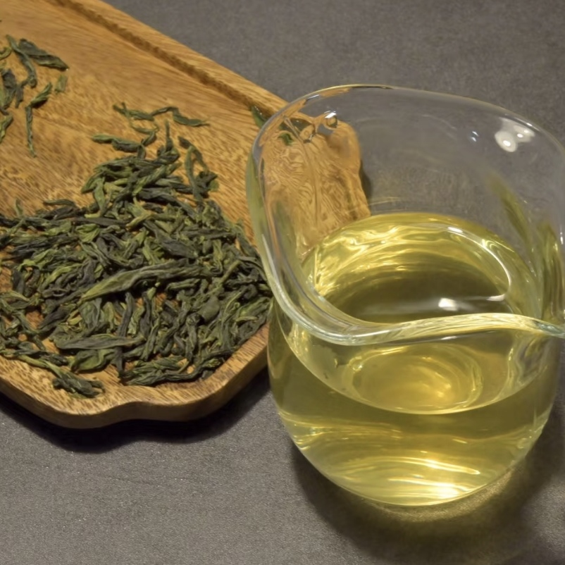
 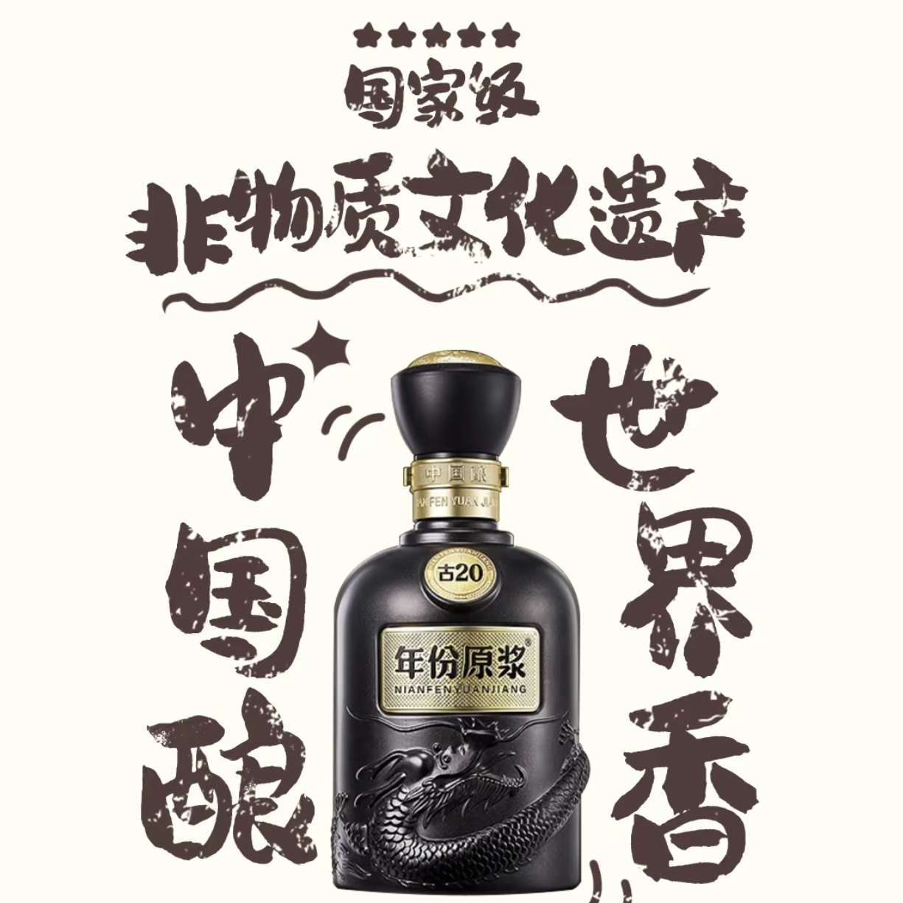
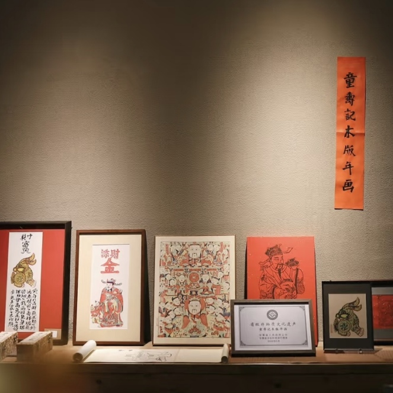
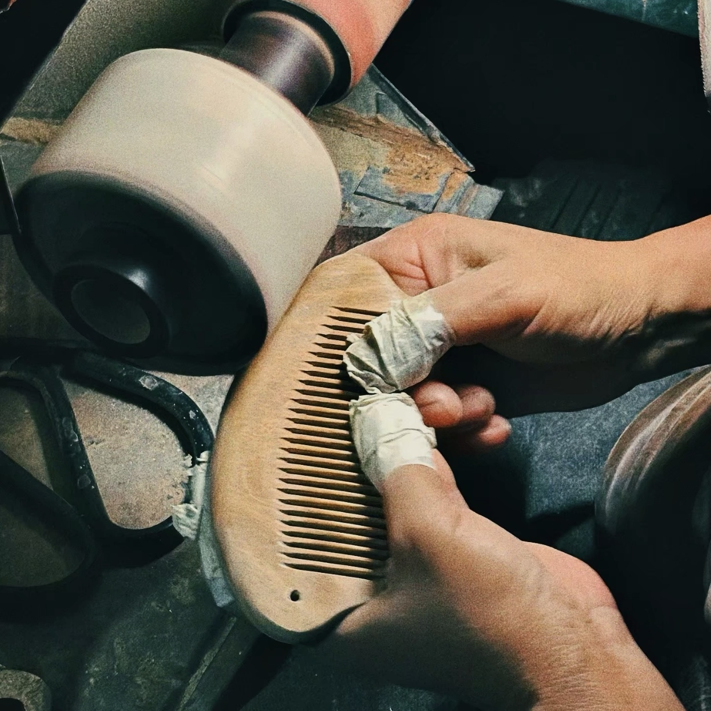
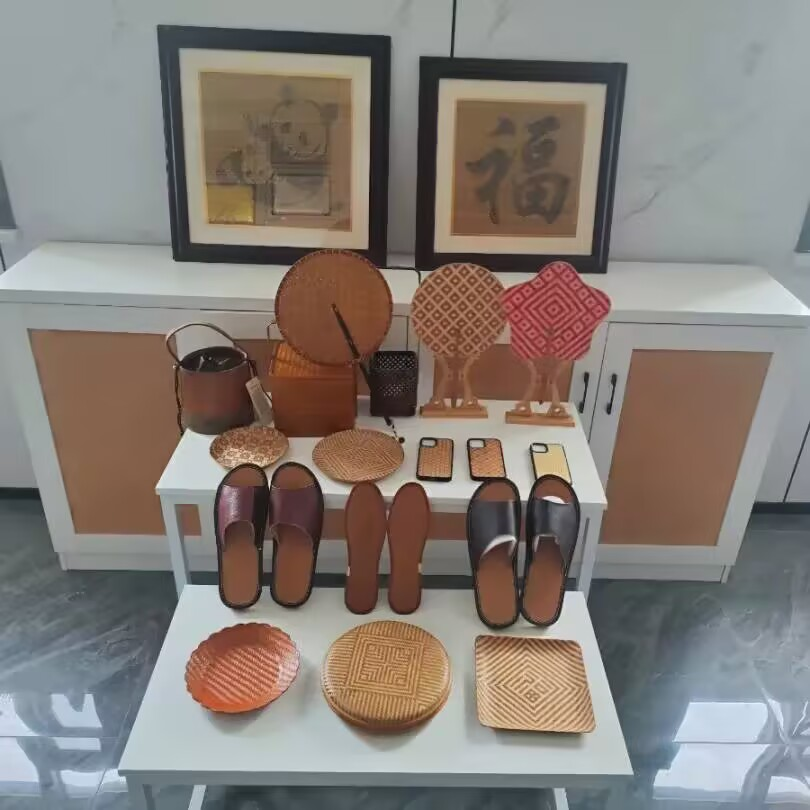
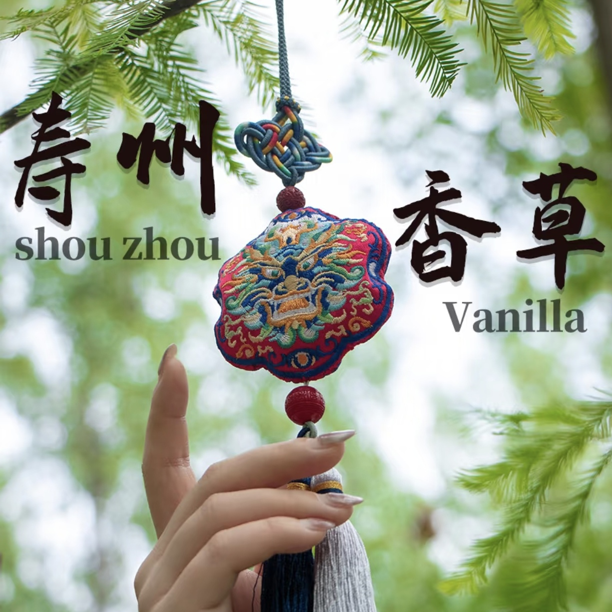
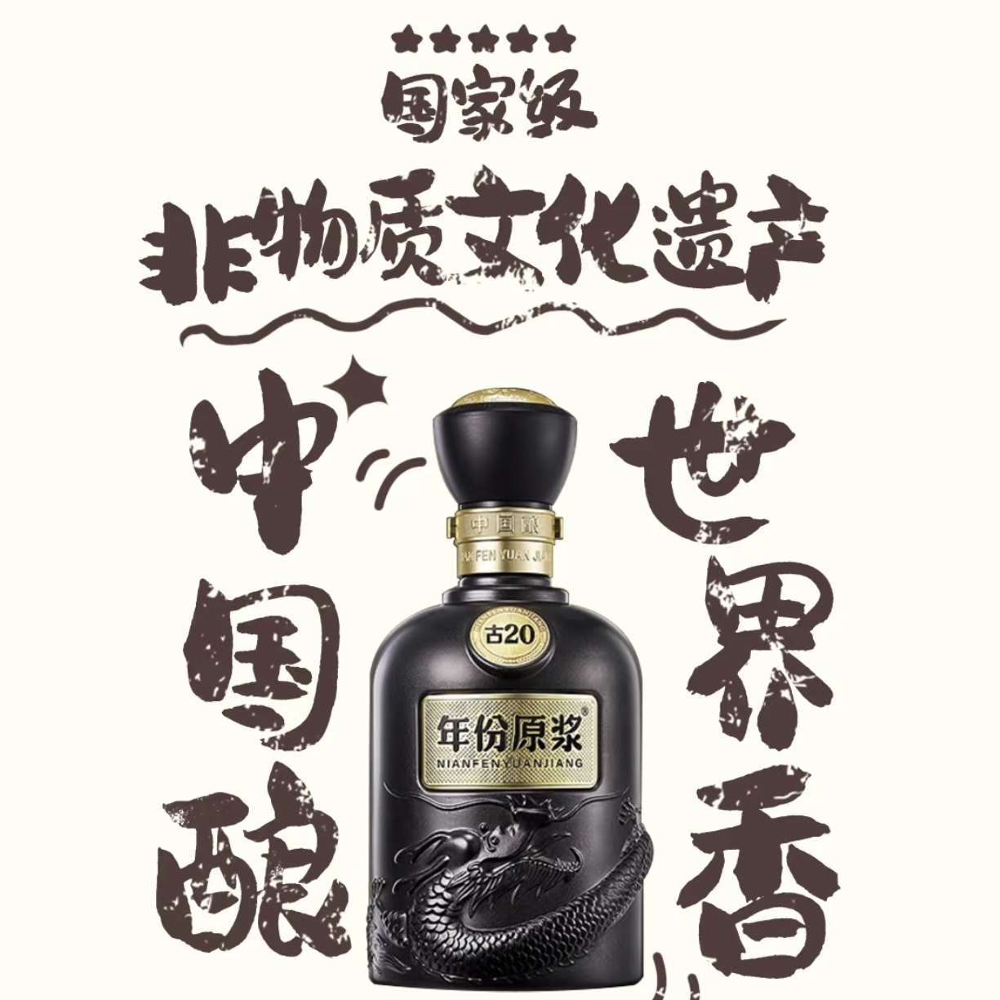
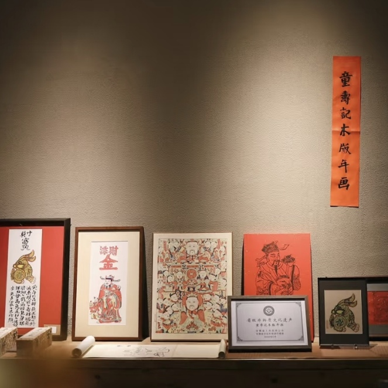
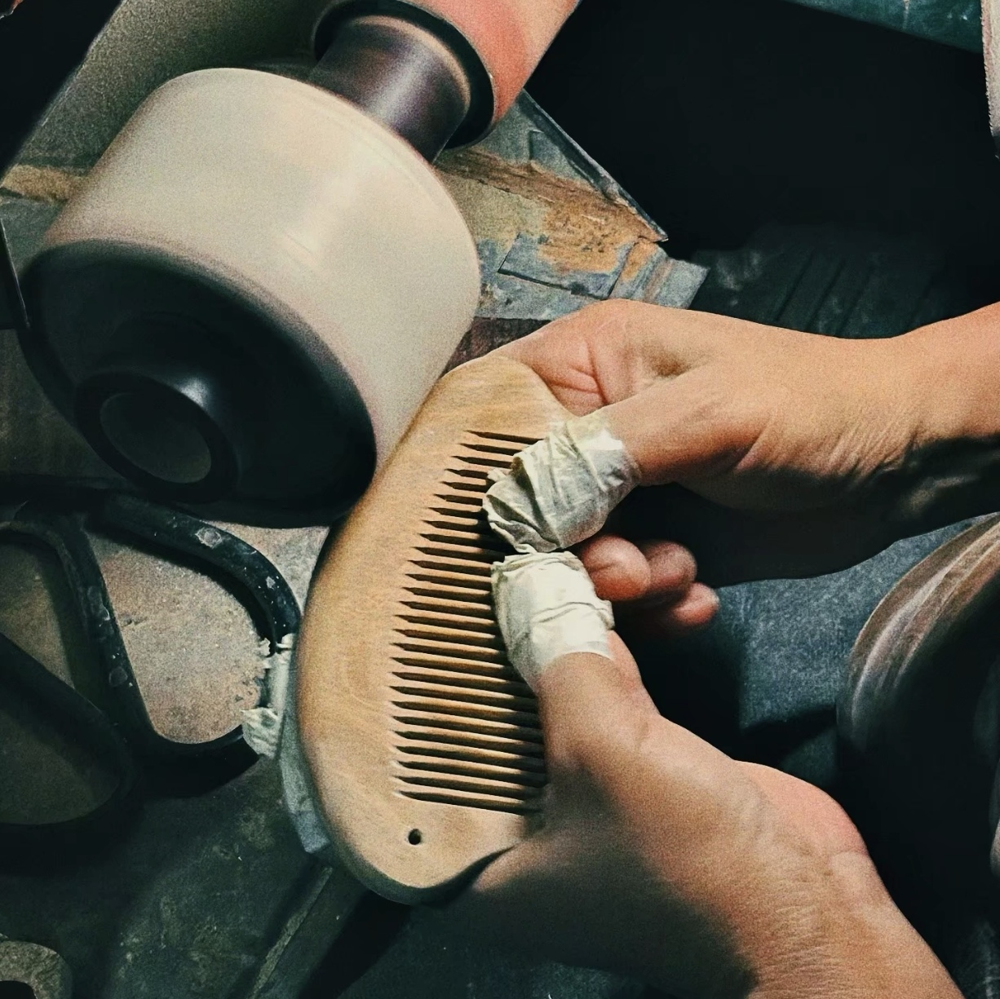
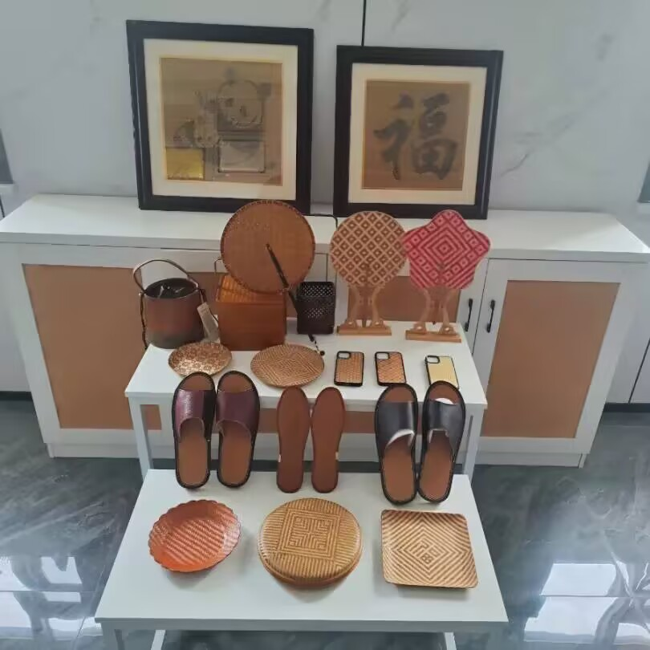
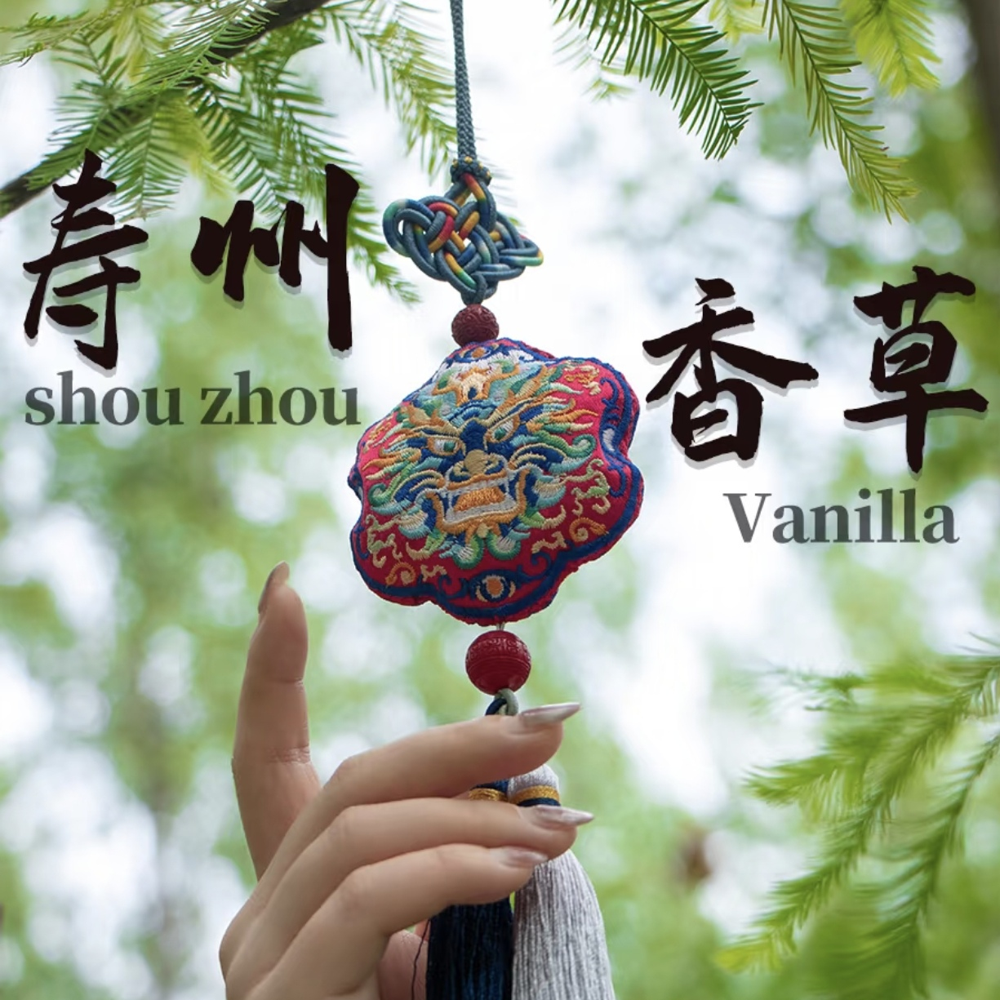
这个你放心好了。在安徽省文化和旅游厅的统筹下，各地以“非遗年货购物月”为主题开展了丰富多样的非遗展销活动，涉及非遗代表性项目361个、店铺652家、非遗工坊27家等各类非遗企业，销售额近7亿元。歙县“鱼灯”热度火爆，鱼灯销售近万只，销售额达100万元，鱼灯系列冰箱贴销售额约5万元，其它衍生类产品近13万元。瞻淇村累计接待游客9.7万人次，旅游总消费120万元，同比创历史新高。国家级非遗项目古井贡酒实现销售额超亿元，六安瓜片作为走亲访友佳品，销售额达160万元。都是官方好物，中国人诚实守信！